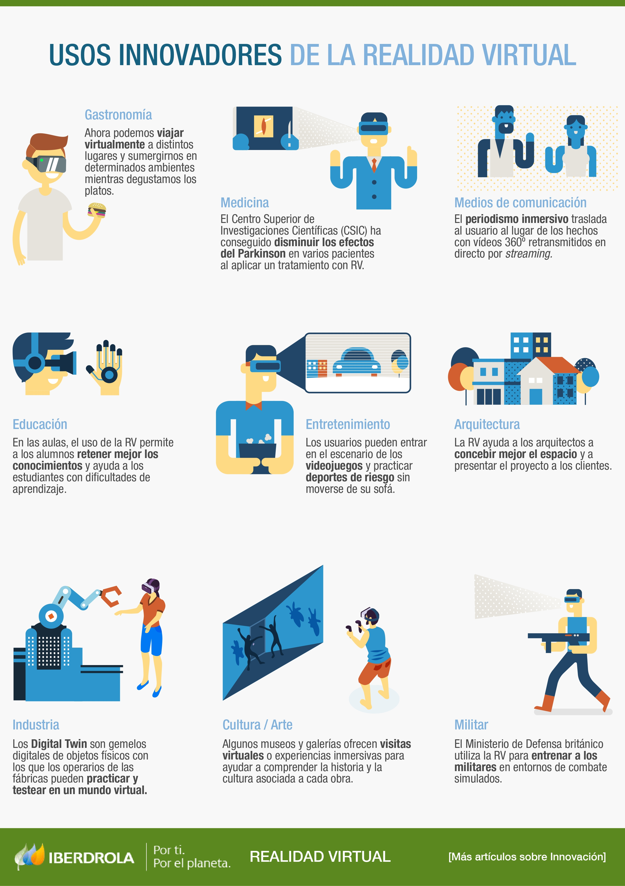

¿Qué es la Realidad Virtual?
Es un entorno de escenas y objetos de apariencia real —generado mediante tecnología informática— que crea en el usuario la sensación de estar inmerso en él. Dicho entorno se contempla a través de un dispositivo conocido como gafas o casco de Realidad Virtual.

Infografía de los usos de la Realidad Virtual. Fuente: IBERDROLA